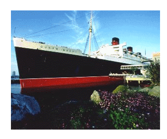

Tel: (949) 476-2001
Toll Free: (800) 243-4141
Fax: (949) 476-7099
info@npb.suttonplace.com
The special Cluster 2001room rate is $139/night.
Room reservations should be made by individuals by telephone (+1-949-476-2001 from 8:00am to 5:00pm Pacific time). Please reference "IEEE Cluster" when making your reservation to get this rate. The reservation cut-off date is Friday, 7 September 2001 at 5:00 p.m. Pacific time.
The
conference banquet on Wednesday
night will be held on the Queen Mary.
The Queen Mary, the grandest ocean liner ever built, has played many roles in her illustrious career. During her heyday, many considered her the only civilized way to travel.
With the outbreak of World War II, the Queen Mary was transformed into a troopship overnight. By the end of the war, "The Grey Ghost," as she was fondly called, had carried more than 800,000 troops, traveled more than 600,000 miles and played a significant role in virtually every major Allied campaign. In February 1946 she began her "Bride and Baby Voyages" and transported more than 22,000 war brides and their children to the United States and Canada. She even set a standing record for the most passengers carried in one crossing - more than 16,000 troops and crew!
After the war, the Queen Mary resumed her elegant status. However, as air travel became increasingly more safe and affordable, the days of the transatlantic voyages were numbered. In 1967, the Queen Mary sailed from Southampton, England, to her new permanent home in Long Beach, California. It would be her last crossing - the end of an era.
Today, the Queen Mary is an internationally recognized icon for the City of Long Beach, California. She is embraced as an historic hotel and a floating museum and is listed on the National Register of Historic Places.
Some suggestions for things to do while in Southern California:
More SoCal tourism sites:

(click for weather forecast)
Information on Wireless Networking at the Conference
IEEE Cluster 2001 will offer a standard based IEEE 802.11b wireless
network access for laptops in the Deauville Halls of The Sutton Place
Hotel. The wireless network will be active beginning Tuesday Oct.9th
through Oct 11th, 2001.
There are limitations and performance considerations while on the
wireless network which you should familiarize yourself with.
In order to use the Wireless Network Service you will need to have:
- A laptop
- A subscribed network connection for the laptop
- A wireless network card
and you need to:
-
Have the approprate wireless card and drivers installed on your laptop
-
Register your request for a wireless connection at the Cluster 2001
registration table -
Configure a profile with the correct wireless network parameters